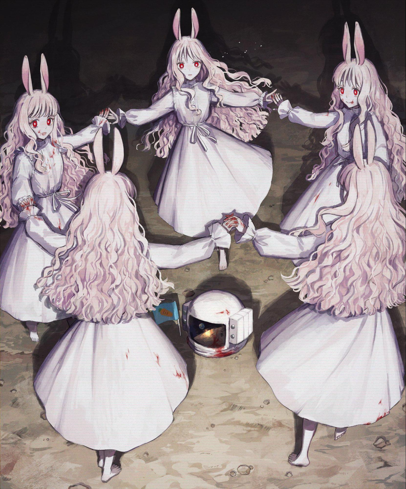

Playable Races > Lunarian
A race of feminine magical rabbit-eared creatures that dwell on the surface of the moon. They oversee the delicate process of transitioning mortal souls to higher planes after death and pursue arcane knowledge from around the world.
Being mystical creatures connected to higher planes, they can't be Knights, Priests or Necromancers, but otherwise have free choice.
Eternity: Lunarians never truly die as long as the rest of their party is alive, instead reverting into harmless flying wisps that are reborn on the next full moon (first or last day of the month), or when resurrected.
Moonwind: While conscious, aware and awake, Lunarians can float up to five feet the air off the ground.
Lunar Connection: Lunarian powers are connected to moon cycles. They can the ability to turn invisible once per night when it is waning (first half of the month) until they touch anything organic, and to teleport short distances anywhere they can see within twenty feet once per night when it is waxing (second half of the month.)
Racials: +2 INT +2 CHA -2 STR -2 CON +4 Knowledge (Magic) +4 Judge
Health: 1d6 health points per level.
Origin: Lunarians live on the moon, but pass as humans when visiting Dunia.